SIMULA 2026 · Oslo, Norway · Aug. 21st, 2026
Tuning Sound with Liquid Crystals: Finite Element Methods for Nematoacoustics
Tim van Beeck1
previous joint work with P. E. Farrell2,3, U. Zerbinati2
1 University of Göttingen, Institute for Numerical and Applied Mathematics
2 University of Oxford, Mathematical Institute
3 Charles University, Prague, Faculty of Mathematics and Physics
Motivation
Motivation
- Nematic liquid crystals: ordered fluids, whose local average orientation is described by a unit vector $\vec{n} \in \mathbb{R}^d$
- $\vec{n}$ can be controlled by external electromagnetic fields core mechanism of LCDs: manipulating polarized light waves
- $\vec{n}$ also interacts with acoustic waves: anisotropy in attenuation and speed of sound, i.e., waves propagate faster along $\vec{n}$ control of the director $\Rightarrow$ control of the propagation
- nematoacoustics Virga (2009); Selinger et al. (2002)
- modeled by the nematic Helmholtz–Korteweg equation Farrell, Zerbinati (2025)
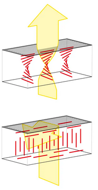
Nematic drum
play with it yourselfPotential applications
Acoustic devices
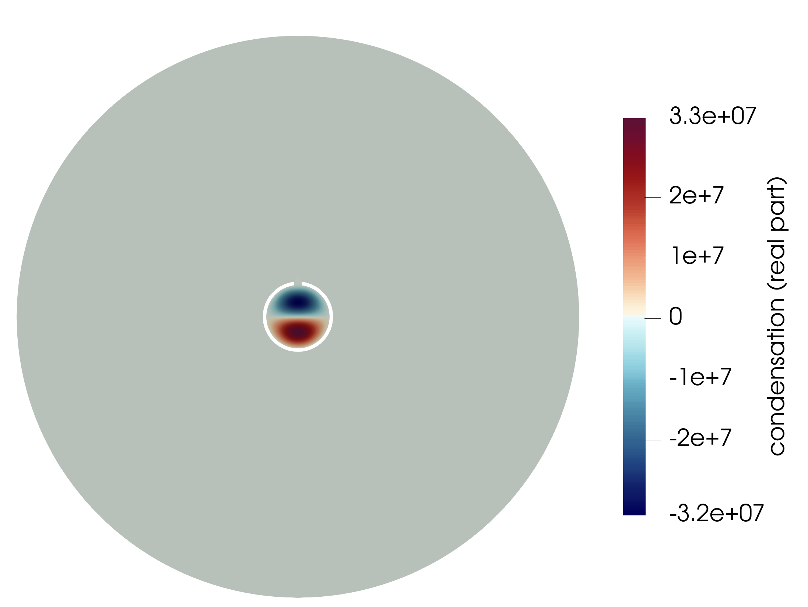
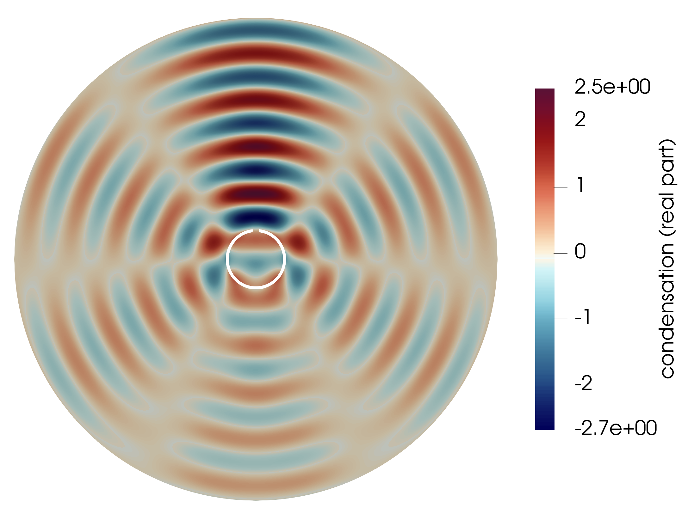
Potential applications
Biomedics
-
Some biological tissues can be modeled as nematic LCs
- epithelial tissues as active nematic LCs
- myosin myocardial mesh (heart) has a structure analogous to a nematic chiral LC
- brain glioma as active nematic LC
- Applications to imaging?
- can we distinguish materials based on the nematic structure?
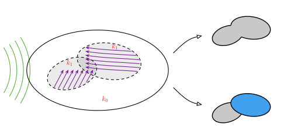
[1] Argento et al., Gliomas organize as liquid crystals: three-dimensional nematic order, disclinations and quasi-long-range order, bioRxiv, 2025.
[2] Hirst, Charras, Liquid crystals in living tissue, Nature, 2017.
[3] Auriau, Usson, Jouk, The nematic chiral liquid crystal structure of the cardiac myoarchitecture: disclinations and topological singularities, J. Cardiovasc. Dev. Dis., 2022.
Modeling
Physical Model: The PDE
- In Korteweg fluids, the Cauchy stress tensor depends on the gradient of the density \[ \bm{\sigma} = p \bm{I} - u_1 \rho (\nabla \rho \otimes \nabla \rho) - u_2 \rho (\nabla \rho \cdot \bm{n})\nabla \rho \otimes \bm{n} \]
- The pressure then reads \[ p = \rho c_0^2 - \rho \div(\rho(u_1 \nabla \rho + u_2(\nabla \rho \cdot \bm{n})\bm{n})) \]
- We model the time-harmonic condensation of the wave: $\rho(x,t) \approx \rho_0(1+s(x,t))$, $s(x,t) = \Re (S(x) e^{-i\omega t})$
- Neglecting higher order terms, using that $\bm{n}$ is constant, we obtain from the continuity and moment equation \[ \rho_0^2 u_1 \Delta^2 S + \rho_0^2 u_2 \div \nabla (\nHn{S}) - c_0^2 \Delta S - \omega^2 S = 0 \]
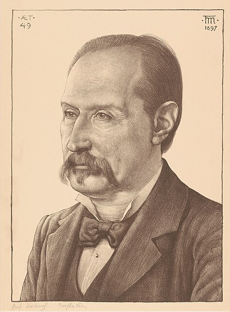
Modeling
Physical Model: Boundary conditions
- From the previous modeling, we obtain the linearized pressure \[ q \coloneqq u - (\alpha \Delta u + \beta \nHn{u}) \]
- Sound soft: pressure vanishes \[ q = 0 \quad \Rightarrow \quad u = 0, \quad \alpha \Delta u + \beta \nHn{u} = 0\]
- Sound hard: normal derivative of pressure vanishes \[ \dn q = 0 \quad \Rightarrow \quad \dn u = 0, \quad \alpha \Delta u + \beta \nHn{u} = 0\]
- Impedance: combination of the above \[ \dn q = i \theta q \quad \Rightarrow \quad \dn u = i \theta u, \quad \dn(\alpha \Delta u + \beta \nHn{u}) = i \theta (\alpha \Delta u + \beta \nHn{u}) \]
Modeling
The nematic Helmholtz–Korteweg equation
Find $u : \Omega \subset \mathbb{R}^d \to \mathbb{C}$, $d = 2,3$, such that
with $\alpha > 0$, $\beta \in \mathbb{R}$, and $\vec{n} \in \mathbb{R}^d$ constant, $\vert \vec{n} \vert = 1$.
- sound-soft boundary conditions on $\Gamma_D$: \[ u = 0 \text{ on } \Gamma_D, \]
- impedance boundary conditions on $\Gamma_R$: \[ \dn (u + \alpha \Delta u + \beta \nHn{u}) = i \theta u \text{ on } \Gamma_R, \]
- $\Omega$ surrounded by an ideal gas: \[ \alpha \Delta u + \beta \nHn{u} = 0 \text{ on } \partial \Omega \]
Well-posedness
Continuous problem
- Focus on sound soft case
- Hilbert space + inner product / norm: \[ V \coloneqq \{ v \in H^2(\Omega) : v = 0 \text{ on } \Gamma_D \}, \qquad (u,v)_{V} = (\Delta u, \Delta v)_{\Omega} + (u,v)_{H^1(\Omega)}. \]
- Then multiply with a test function & integrate by parts
Given $f \in L^2(\Omega)$, find $u \in V$ such that
\[ \begin{aligned} a(u,v) &\coloneqq \alpha (\Delta u, \Delta v)_{\Omega} + \beta (\nHn{u},\Delta v)_{\Omega} + (\nabla u, \nabla v)_{\Omega} - k^2(u,v)_{\Omega} \mathbin{\color{gray}{-}} {\color{gray}{i \theta (u,v)_{\Gamma_R}}} \\ &\ = (f,v)_{\Omega} \qquad \text{ for all } v \in V. \end{aligned} \]Well-posedness
Tools
Let $V,W$ be Hilbert with $V \hookrightarrow W$ compact. If there exist constants $C_V,C_W$ such that
\[ \Re a(u,u) \ge C_V \Vert u \Vert^2_{V} - C_{W} \Vert u \Vert^2_{W} \qquad \forall u \in V, \]then the associated operator is Fredholm with index zero, i.e. well-posedness is equivalent to uniqueness of solutions.
- index zero: $\dim \ker A = \dim (V / \text{range } A)$
- Structure useful to show stability at the discrete level
If $\Omega$ is convex, or $d = 2$ and $\Omega$ is polygonal, then
\[ \Vert \hessian u \Vert_{\Omega} \le \Vert \Delta u \Vert_{\Omega} \qquad \forall u \in H^2(\Omega) \cap H^1_0(\Omega). \]Well-posedness
Perturbation argument
If $\vert \beta \vert < C_{\beta = 0}$, then the weak formulation is well-posed.
Transfer well-posedness from the isotropic case:
- Well-posedness for $\beta = 0$: Gårding + uniqueness (similar to Helmholtz) \[ \Re a(u,u) = \alpha \Vert \Delta u \Vert^2_{\Omega} + \Vert \nabla u \Vert_{\Omega} - k^2 \Vert u \Vert^2_{\Omega} \ge \min\{\alpha,1\} \Vert u \Vert^2_{V} - (k^2 + 1)\Vert u \Vert^2_{\Omega}. \]
- estimate the anisotropic term \[ \vert \beta (\nHn{u},\Delta u)_{\Omega} \vert \le \vert \beta \vert \Vert \hessian u \Vert_{\Omega} \Vert \Delta u \Vert_{\Omega} \le \vert \beta \vert \Vert \Delta u \Vert_{\Omega}^2 \]
Well-posedness
Reformulation
- $C_{\beta = 0}$ depends on the stability constant of the isotropic problem
- Blow-up around resonant wave-numbers forces $\beta \to 0$
- is this what we expect?
With $\Am \coloneqq \alpha \Idm + \beta\, \vec{n} \otimes \vec{n} \in \mathbb{R}^{d \times d}$, we rewrite (similar to non-divergence form PDEs Smears, Süli (2013))
\[ (\alpha \Delta u + \beta \nHn{u},\Delta v)_{\Omega} = (\Am : \hessian u, \Delta v)_{L^2}, \qquad \Am : \mathbb{B} = \tr(\Am^\top \mathbb{B}) \]Well-posedness
The Cordes condition
- Pointwise estimate: for any $\gamma > 0$ $\ \Vert \gamma \Am : \hessian u - \Delta u \Vert^2_{\Omega} \le \vert \gamma \Am - \Idm \vert^2_{F} \Vert \hessian u \Vert^2_{\Omega}$
If $\vert \gamma \Am - \Idm \vert_{F} < 1$, $\gamma \coloneqq \tr(\Am) / \vert \Am \vert^2_{F}$, then there exist constants $C_V,C_{L^2}$ such that
\[ \Re a(u,u) \ge C_V \Vert u \Vert^2_{V} - C_{L^2} \Vert u \Vert^2_{\Omega}, \qquad \forall u \in V. \]Use the assumption $\vert \gamma \Am - \Idm \vert_{F} < 1$ by estimating
\[ \begin{aligned} \left\vert (\gamma \Am : \hessian u - \Delta u, \Delta u)_{\Omega} \right\vert &\le \vert \gamma \Am - \Idm \vert_{F} \Vert \hessian u \Vert_{\Omega} \Vert \Delta u \Vert_{\Omega} \le \vert \gamma \Am - \Idm \vert_{F} \Vert \Delta u \Vert^2_{\Omega} \end{aligned} \]and
\[ \Re (\Am : \hessian u, \Delta u) = \gamma^{-1} \Vert \Delta u \Vert^2_{\Omega} + \gamma^{-1} \Re (\gamma \Am : \hessian u - \Delta u, \Delta u)_{\Omega} \ge \gamma^{-1} \left( 1 - \vert \gamma \Am - \Idm \vert_{F} \right) \Vert \Delta u \Vert^2_{\Omega}. \]Well-posedness
Smallness assumption
With $\gamma \coloneqq \tr(\Am) / \vert \Am \vert^2_{F}$ and $\mu \coloneqq (d-1) - 1$, we have
\[ \vert \gamma \Am - \Idm \vert_{F} < 1 \quad \Longleftrightarrow \quad \beta \in \left( \frac{\alpha}{\mu}\left(1-\sqrt{1+d\mu}\right),\ \frac{\alpha}{\mu}\left(1+\sqrt{1+d\mu}\right) \right). \]- Plugging in the values of $d$ and $\mu$ gives
- $d = 2$: $\mu = 0 \ \Rightarrow \ \beta \in (-\alpha,\infty)$ — always satisfied for $\beta > -\alpha$
- $d = 3$: $\beta \in (-\alpha, 3\alpha)$
- Can be directly applied to the case where $\Am$ is smoothly varying
Well-posedness
Reversed Cordes condition
- For $\Am$ constant, we can apply the argument in reverse:
- Define an alternative norm on $V$: $\quad C_1 \Vert u \Vert_{H^2} \le \Vert \Am:\hessian u \Vert_{L^2} + \Vert u \Vert_{H^1} \le C_2 \Vert u \Vert_{H^2}$
- $S \coloneqq \Am^{1/2}$ is an affine mapping, transformation rule applicable
- Estimate $(\Am:\hessian u,\Delta u) \ge \frac{1}{\tilde{\gamma}} (1 - \vert \tilde{\gamma} \Am^{-1} - \Idm \vert_{F}) \Vert \Am : \hessian u \Vert_{L^2}^2$
- Smallness condition on $\Am^{-1}$, satisfied if $\beta > - 3\alpha/4$ and $\alpha + \beta > 0$ (in $d = 3$)
- Assumption: uniqueness holds under this smallness assumption for $k^2 \not \in \mathcal{K}_{\text{res}}$
Let $\Omega$ be bounded convex or $\Omega \subset \mathbb{R}^2$ polygonal and let $k^2 \not \in \mathcal{K}_{\text{res}}$. Then, there exists a unique weak solution of the nematic Helmholtz–Korteweg equation (sound-soft case).
- Transfers to $\Omega$ non-convex with smooth boundary
Discretization
Conforming approximation
- Approximation with conforming FEM needs $H^2$-conforming finite elements \[ X_h := \{ v_h \in H^2(\Omega) : v_h|_K \in P_p(K), \forall K \in \mathcal{T}_h \} \subset H^2(\Omega) \]
- $C^1$-conforming elements require higher polynomial degree $p$ and / or special meshes
- Argyris needs $p = 5$ in 2D and $p = 9$ in 3D
- HCT on a split needs $p = 3$ in 2D and $p = 5$ in 3D
- Imposing Dirichlet boundary conditions is tricky
- Nitsche's method
- Curved geometries are difficult
Farrell, vB, Zerbinati, Analysis and numerical analysis of the nematic Helmholtz–Korteweg equation, arXiv, 2025.
Discretization
Nitsche's method
- Impose boundary conditions weakly by adding \[ \begin{aligned} N_h^{\Delta^2}(u_h,v_h) &\coloneqq \alpha (\dn \Delta u_h,v_h)_{\partial \Omega} + \alpha (u_h, \dn \Delta v_h)_{\partial \Omega} \\ N_h^{\beta}(u_h,v_h) &\coloneqq \beta (\dn \nHn{u_h},v_h)_{\partial \Omega} \\ N_h^{\Delta}(u_h,v_h) &\coloneqq (\dn u_h,v_h)_{\partial \Omega} + (u_h, \dn v_h)_{\partial \Omega} \end{aligned} \]
- Stabilization term \[ S_h^D(u_h,v_h) \coloneqq h^{-3} (u_h,v_h)_{\partial \Omega}, \qquad \vert u_h \vert_{S_h}^2 \coloneqq S_h^D(u_h,u_h) \]
- Weak formulation Find $u_h \in X_h$ s.t. for all $v_h \in X_h$: \[ a_h(u_h,v_h) \coloneqq a(u_h,v_h) + N_h(u_h,v_h) + \eta S_h^D(u_h,v_h) = (f,v_h)_{\Omega}. \]
Farrell, vB, Zerbinati, Analysis and numerical analysis of the nematic Helmholtz–Korteweg equation, arXiv, 2025.
Discretization
Stability of the conforming discretization
- Estimate Nitsche terms with inverse trace estimates: \[ \Vert \dn \Delta u_h \Vert_{\partial \Omega} \le C h^{-3/2}\Vert \Delta u_h \Vert_{\Omega }, \qquad \Vert \dn (\nHn{u_h}) \Vert_{\partial \Omega} \le C h^{-3/2} \vert u_h \vert_{H^2(\Omega)} \]
Let $\eta > 0$ be sufficiently large. Then, there exist constants $C_1,C_2$ such that
\[ \Re a_h(u_h,u_h) \ge C_1 \Vert u_h \Vert_{H^2(\Omega)}^2 - C_2 \Vert u_h \Vert_{L^2(\Omega)}^2. \]- Stability follows from the abstract arguments presented later on.
Farrell, vB, Zerbinati, Analysis and numerical analysis of the nematic Helmholtz–Korteweg equation, arXiv, 2025.
Discretization
Non-conforming approximation
- We get more flexibility by going non-conforming, but…
- Full DG for $4$th order PDEs is painful: \[ \begin{aligned} (\Delta^2 u_h,v_h)_{\Omega} &= \sum_{T \in \Th} (\Delta u_h, \Delta v_h)_{T} \\ &+ \sum_{F \in \Fh} \left( (\dgavg{\dn(\Delta u_h)},\dgjump{v_h})_{F} + (\dgavg{\Delta u_h}, \dgjump{\dn u_h})_{F} \right) \\ &+ {\color{gray}{\text{ symmetry terms (2x) } + \text{ stabilization terms (2x)}}} \end{aligned} \]
- $C^0$-interior penalty method Brenner, Sung (2005): choose $V_h \subset H^1$ and use (H)DG techniques to deal with the $H^2$-nonconformity
Discretization
$C^0$-hybrid interior penalty
- $V_h \coloneqq \left( \mathbb{P}^p(\Th) \cap H^1_{\Gamma_D}(\Omega) \right) \times \mathbb{P}^{p-1}(\Fh)$
- unknowns are tuples \[ \uh \coloneqq (\uvol, \ufac), \qquad \uvol \approx u, \ \ufac \approx \dn u \]
- HDG-jump operator: \[ \hdgjump{\dn \uvol} \coloneqq \dn \uvol - \ufac \]
- static condensation allows eliminating higher order interior bubbles
significant reduction of
dofsfor higher $p$
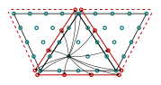
$(p+1)(p+2)/2$ interior dofs
$p$ facet dofs per facet
Dong, Ern, $C^0$-hybrid high-order methods for biharmonic problems, IMAJNA, 2023.
Discretization
Discrete setting
- discrete inner product & norm: \[ (\uh,\vh)_{V_h} \coloneqq (\Delta \uh,\Delta \vh)_{\Th} + (\uvol,\vvol)_{H^1(\Omega)} + (\uh, \vh)_{\mathcal{S}_h}, \]
- discrete bilinear form, stabilization parameter $\stab > 0$: \[ \begin{aligned} a_h(\uh,\vh) &\coloneqq (\Am : \hessian \uvol, \Delta \vh)_{\Th} + (\Am:\hessian \uvol, \hdgjump{\dn \uvol})_{\partial \Th} + \stab \left( h^{-1}\hdgjump{\dn \uvol},\hdgjump{\dn \vvol} \right)_{\partial \Th} \\ &\qquad + (\nabla \uvol,\nabla \vvol)_{\Omega} - k^2 (\uvol,\vvol)_{\Omega} \mathbin{\color{gray}{-}} {\color{gray}{i \theta (\uvol,\vvol)_{\Fh^{R}}}} \end{aligned} \]
- $V_h \not\subset V$, projection $\pi_h : V \to V_h$ s.t. $\lim_{h \to 0} \Vert \pi_h u \Vert_{V_h} = \Vert u \Vert_{V}$ for all $u \in V$ convergence $u_h \overset{\pi_h}{\to} u$ and weak convergence $u_h \overset{\pi_h}{\rightharpoonup} u$
Discretization
Abstract tools
Non-conforming: $V_h \not\subset V$ $\Rightarrow$ discrete approximation scheme (DAS) Vainikko (1981)
- $a_h(\cdot,\cdot)$ asymptotically consistent: $a_h(\pi_h u, v_h) \to a(u,v)$ whenever $v_h \overset{\pi_h}{\rightharpoonup} v$
- $\exists$ maps $\iota_h : V_h \to W$ uniformly bounded mirroring $V \hookrightarrow W$ compact $\exists J \in \mathcal{L}(V,W)$ s.t. $\forall$ bounded $\seqh{v}$ with $v_h \overset{\pi_h}{\rightharpoonup} v$, $v \in V$, we have that $\iota_h v_h \to Jv$ strongly in $W$.
If $a_h(\cdot,\cdot)$ satisfies the discrete Gårding inequality
\[ \Re a_h(u_h,u_h) \ge \widetilde{C}_V \Vert u_h \Vert_{V_h}^2 - \widetilde{C}_W \Vert \iota_h u_h \Vert_{W}^2 \qquad \forall u_h \in V_h, \]then $a_h(\cdot,\cdot)$ is asymptotically stable, i.e., inf-sup stable with $h$-independent constant for $h \le h_0$.
Discretization
Discrete elliptic regularity
Let $h \le 1$. For any $\uh \in V_h$, we have that
\[ \Vert \hessian \uvol \Vert_{\Th} \le \Vert \Delta_h \uh \Vert_{\Th} + C_E \vert \uh \vert_{\mathcal{S}_h}, \]with constant $C_E > 0$ independent of $h$.
If $\stab > 0$ is sufficiently large, then there exist $h$-independent constants $\widetilde{C}_V, \widetilde{C}_{L^2} > 0$ such that
\[ \Re a_h(\uh,\uh) \ge \widetilde{C}_V \Vert \uh \Vert^2_{V_h} - \widetilde{C}_{L^2} \Vert \uvol \Vert^2_{\Omega} \qquad \forall \uh \in V_h. \]Discretization
Stability & convergence
If $\stab > 0$ is sufficiently large, then $\exists\, h_0 > 0$ such that for all $h \le h_0$ the discrete problem has a unique solution $\uh \in V_h$. Moreover, if $u \in V$ solves the continuous problem,
\[ \lim_{h \to 0} \Vert u - \uh \Vert_{V_h} = 0. \]If additionally $u \in V \cap H^{2+s}(\Omega)$, $s > 1$, then
\[ \Vert u - \uh \Vert_{V_h} \le C \, h^{\min\{p-1,s\}} \Vert u \Vert_{H^{2+s}(\Omega)}. \]Numerical experiments
Convergence study
- unit disk $\Omega$, sound-soft $\Gamma_D = \partial \Omega$
- exact solution: \[ u_{\text{ex}}(\vec{x}) = e^{i (\vec{k} \cdot \vec{x})} \] with $\vec{k}$ from the dispersion relation, homogenized to zero data
- $\vec{n} = (1,0)^\top$, $k = 30$, $\alpha = 10^{-2}$, $\stab = 50 p^2$
- error in the broken $\Vert \cdot \Vert_{V}$-norm, refined meshes $h \approx 0.2 \cdot 2^{-L}$
- observe the predicted rate $\mathcal{O}(h^{p-1})$ for $p \in \{2,3,4,5\}$
Numerical experiments
Scattering
Numerical experiments
Three-dimensional example
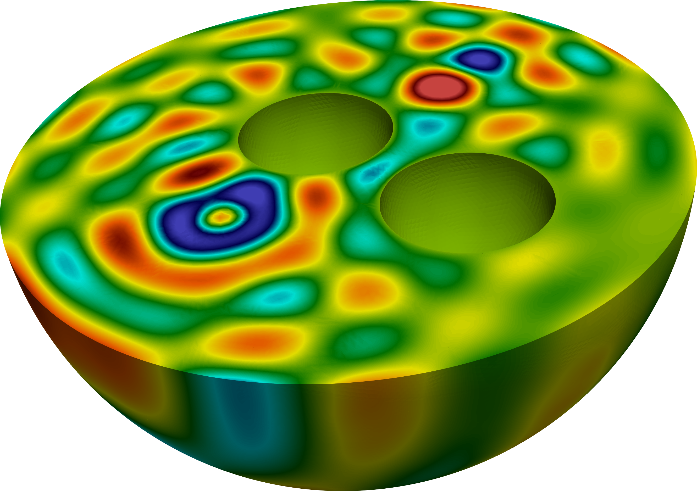
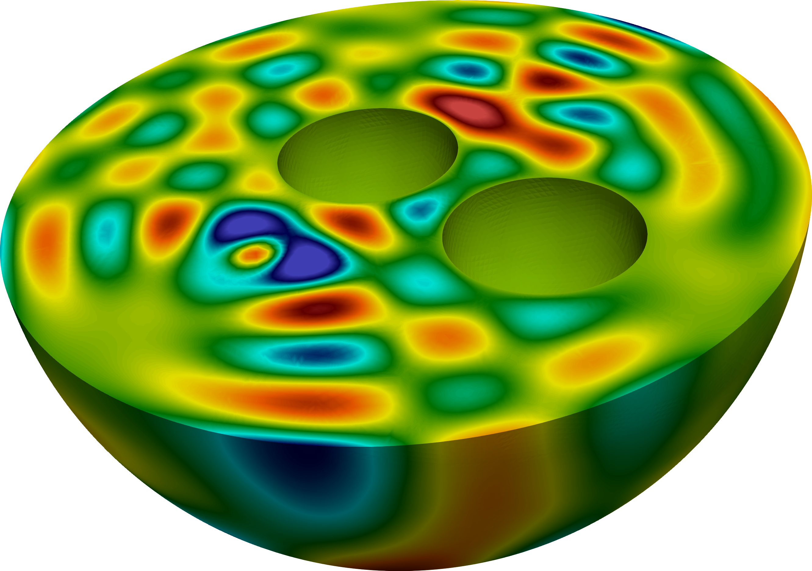
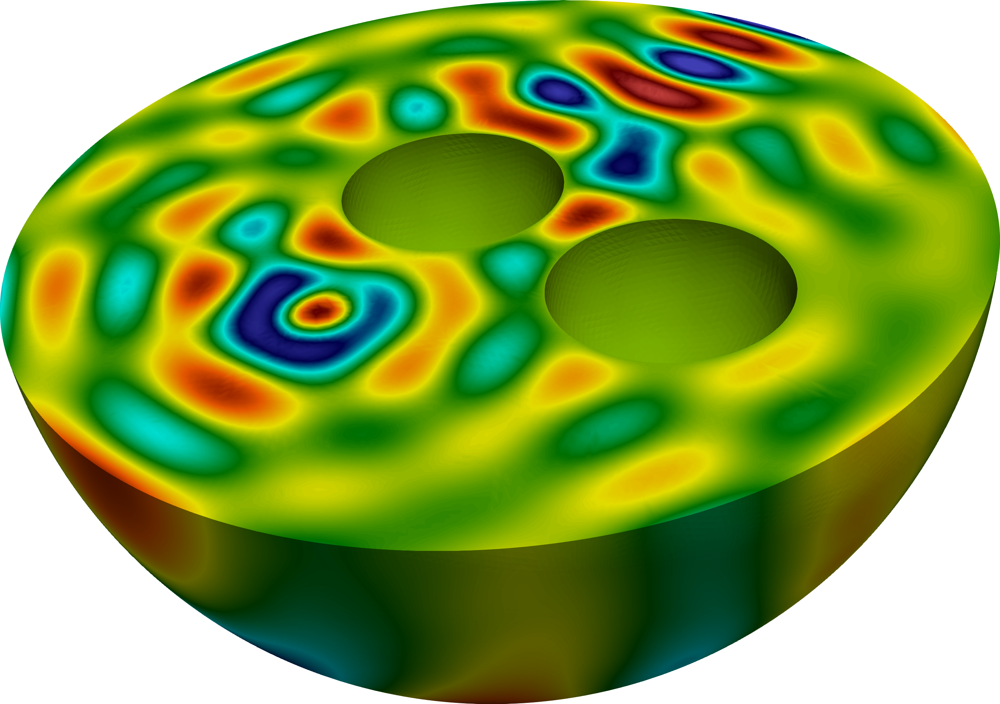
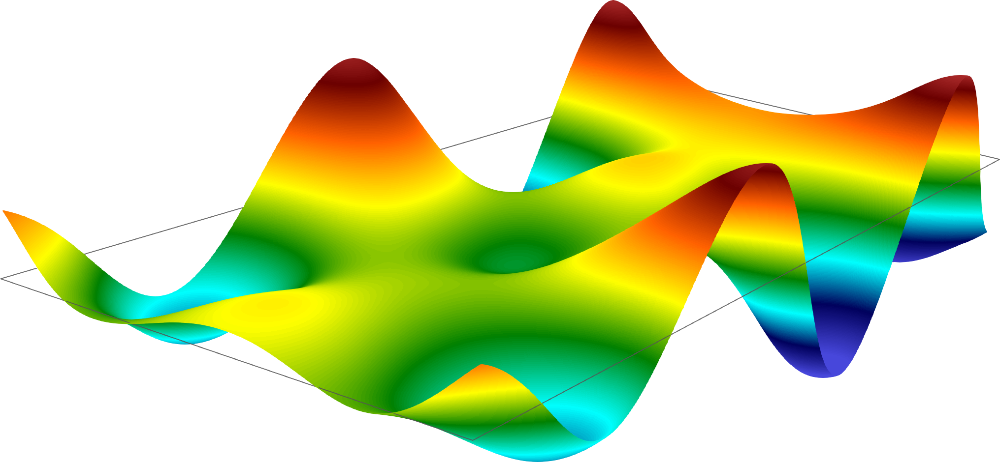
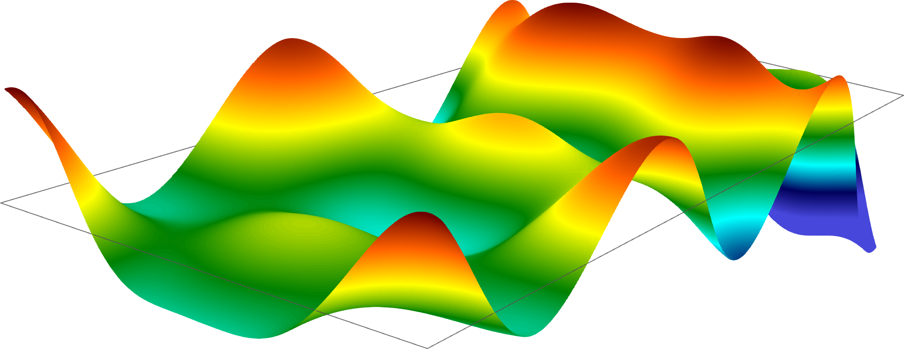
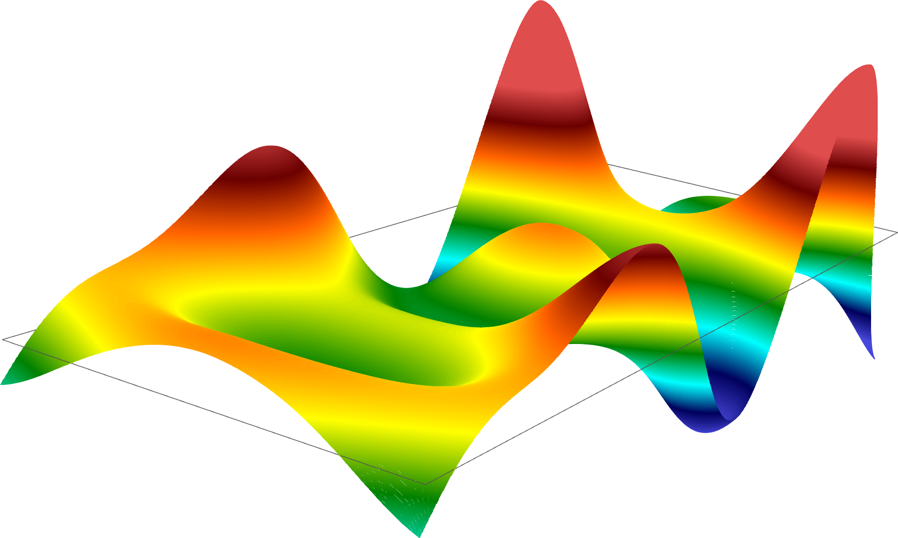
Numerical experiments
Scattering by submarine
Numerical experiments
Scattering by submarine
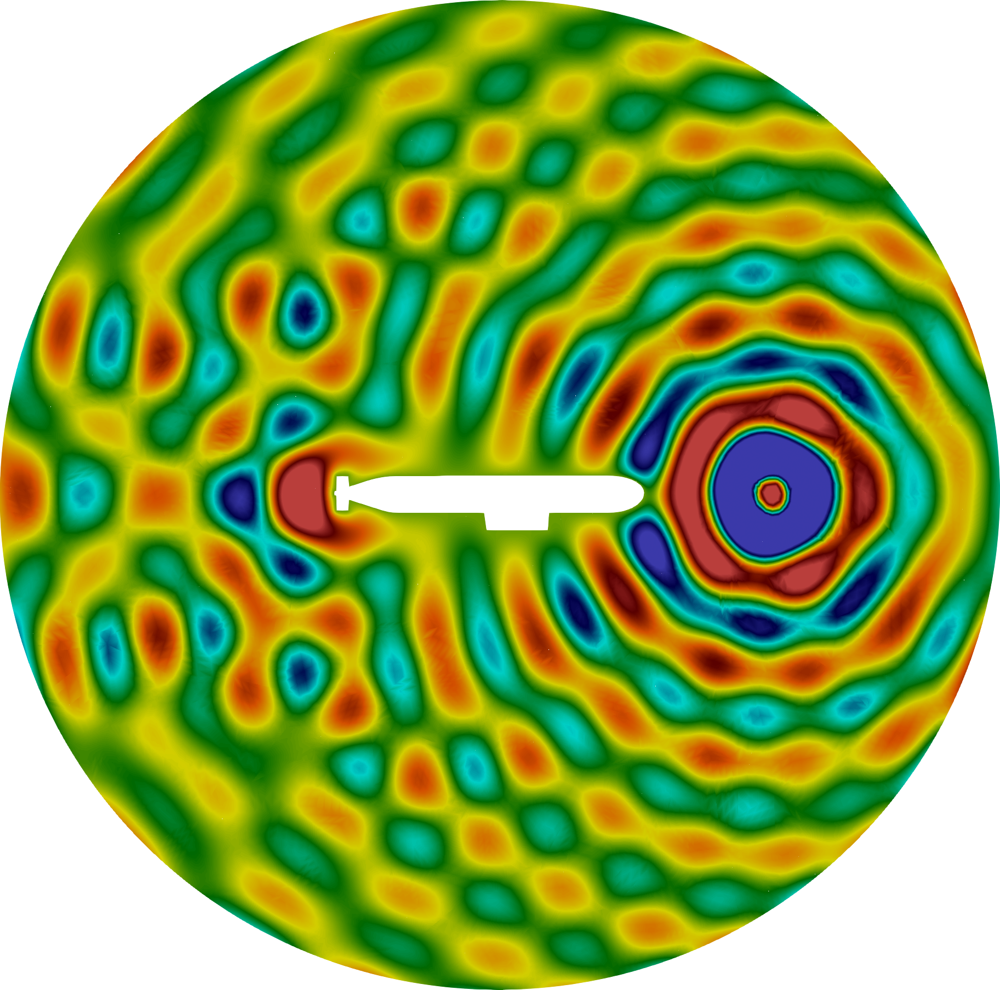
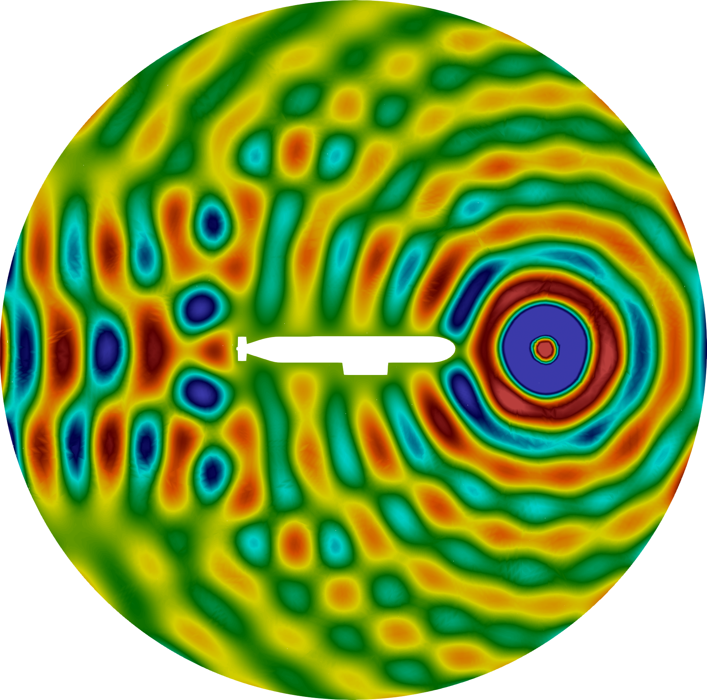
Conclusion
Conclusion
- Fredholmness of the nematic Helmholtz–Korteweg equation via the Cordes condition explicit smallness condition on $\beta$, independent of the isotropic stability constant, under uniqueness assumption
- $C^0$-hybrid interior penalty discretization: flexible, applicable in $d = 3$ and on curved domains, stable for all $p \ge 2$, convergent under minimal regularity $u \in H^2(\Omega)$
- numerical experiments, including first 3D simulations of the nematic anisotropy
$C^0$-hybrid IP for the nematic Helmholtz–Korteweg equation
Thank you!
Tim van Beeck
University of Göttingen,
Institute for Numerical and Applied Mathematics
Thanks to Umberto Zerbinati for the nematic drum,
and to Philip Lederer for the html-talk template.
P. E. Farrell, U. Zerbinati, Time-harmonic waves in Korteweg and nematic-Korteweg fluids, Phys. Rev. E 111, 035413, 2025.
P. E. Farrell, T. van Beeck, U. Zerbinati, Analysis and numerical analysis of the nematic Helmholtz–Korteweg equation, arXiv:2503.10771, 2025.
T. van Beeck, A hybrid $C^0$-interior penalty method for the nematic Helmholtz–Korteweg equation, arXiv, 2026.